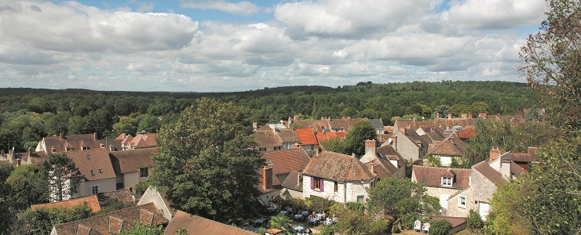
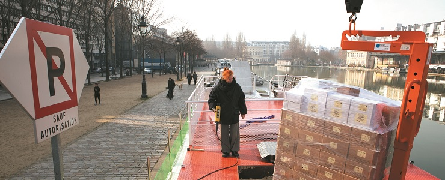
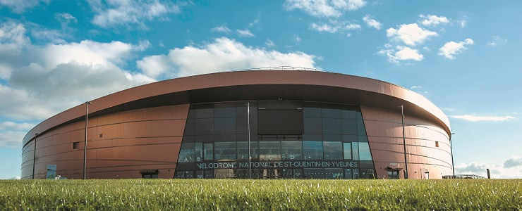
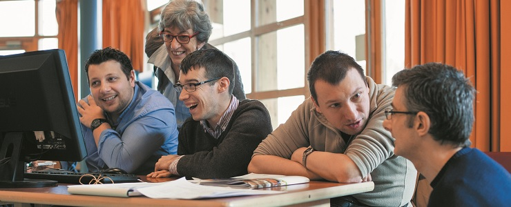
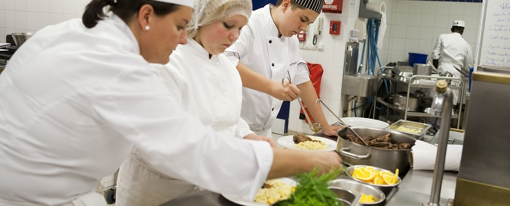
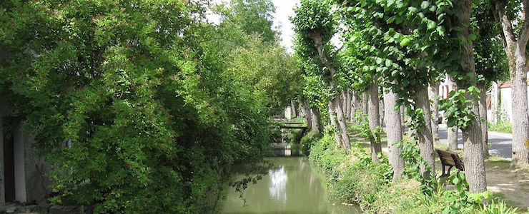
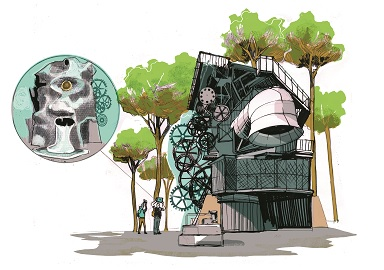
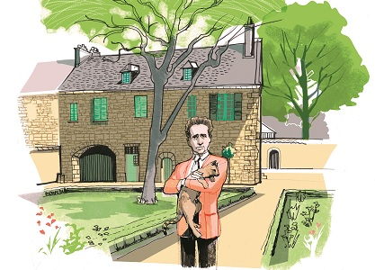
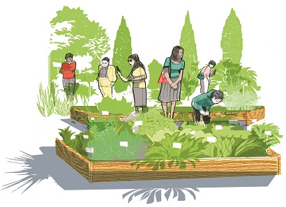

Articles faciles à lire et à comprendre
Promenez-vous dans les parcs naturels

- Un parc naturel
- est un grand territoire où on trouve :
- Des forêts
- Des lacs et des rivières
- Des animaux sauvages
Il y a quatre parcs naturels en Ile de France :
- Le Vexin français (dans le Val-d’Oise et les Yvelines)
- La Haute Vallée de Chevreuse (dans les Yvelines et l’Essonne)
- Le Gâtinais français (dans l’Essonne et la Seine-et-Marne)
- L’Oise-Pays de France (dans le Val-d’Oise)
La Région Ile-de-France donne de l’argent pour :
- Préserver la nature
- Donner envie aux touristes de venir
La Région Ile-de-France organise des animations ou vous pouvez :
- Faire du canoë
- Faire des promenades à pied
- Faire des promenades à dos d’âne
- Goûter des spécialités locales
Il y a un site pour voir le programme des animations : www.parcsnaturels.iledefrance.fr
Il y a une application pour smartphones : Apple et Androïd
Textes transcrits par les travailleurs de l'Esat d'Avenir APEI, les Courlis à Chatou et La Roseraie à Carrières-sur-Seine
Le vin prend l'eau

Le transport par péniche est plus rare que le transport par camion.
Il y a une péniche qui s’appelle l’Alizarine.
La péniche transporte du vin.
La péniche voyage de l’Ardèche jusqu’à l’Ile-de-France.
La péniche parcourt 900 kilomètres.
La péniche traverse 180 écluses.
La péniche arrive sur le canal de l’Ourcq à Paris.
Textes transcrits par les travailleurs de l'Esat d'Avenir APEI, les Courlis à Chatou et La Roseraie à Carrières-sur-Seine
Des Mureaux à Manille
- Les Mureaux
- est une commune du département des Yvelines en région Île-de-France
- Manille
- est la capitale des Philippines
2 élèves d’un lycée des Mureaux sont allés à Manille.
Manille est la capitale des Philippines.
Les Philippines est le pays le plus menacé par le réchauffement de la planète.
Les 2 élèves accompagnent le président de la République.
Le président de la République prépare la réunion mondiale sur le climat.
La réunion mondiale sur le climat a lieu en décembre 2015 au Bourget.
200 pays participent à la réunion mondiale sur le climat.
La région Ile-de-France est prête à agir pour la planète, avec la participation de tous.
Textes transcrits par les travailleurs de l'Esat d'Avenir APEI, les Courlis à Chatou et La Roseraie à Carrières-sur-Seine
50 000 euros
- L’imprimerie Création Tendance Découverte
- se trouve à Dammartin-en-Goële en Seine et Marne.
Après l’attentat de Charlie Hebdo,
les terroristes se sont cachés dans l’imprimerie.
La police a arrêté les terroristes dans l’imprimerie.
L’ imprimerie a été en partie détruite.
Le 29 janvier la région Ile-de-France a donné 50 000 euros à l’imprimerie Création Tendance Découverte.
La région est prête à aider les entreprises en difficulté.
Textes transcrits par les travailleurs de l'Esat d'Avenir APEI, les Courlis à Chatou et La Roseraie à Carrières-sur-Seine
En piste pour les Jeux ?

En 2024 la région Ile-de-France souhaite accueillir les jeux olympiques et les jeux paralympiques.
Les jeux paralympiques sont les jeux olympiques pour les personnes en situation de handicap.
Une piste pour les courses de vélo existe à Saint-Quentin-en-Yvelines.
Il y a une base de loisirs à Vaires-Torcy en Seine-et-Marne.
La base de loisirs peut accueillir les épreuves de canoé-kayak et d’aviron.
Textes transcrits par les travailleurs de l'Esat d'Avenir APEI, les Courlis à Chatou et La Roseraie à Carrières-sur-Seine
Lycées : la laïcité au programme
- La laïcité
- empêche l'État de privilégier une religion par rapport à une autre
La laïcité interdit les signes religieux à l’école
Elle permet à une personne de choisir ou non une religion et de la pratiquer librement.
La région Ile-de-France s’intéresse à la laïcité dans les lycées et les centres de formations d’apprentis.
Après les attaques du journal Charlie hebdo certains lycéens ne respectent pas la minute de silence.
La majorité des lycéens est pour la laïcité dans les lycées.
Textes transcrits par les travailleurs de l'Esat d'Avenir APEI, les Courlis à Chatou et La Roseraie à Carrières-sur-Seine
Écrire facile à lire ce n’est pas si simple

- Le facile à lire et à comprendre
- permet de rendre les informations accessibles pour les personnes qui ont un handicap intellectuel. Mais ces informations accessibles seront aussi utiles pour beaucoup d'autres personnes.
Le facile à lire et a comprendre n’est pas connu.
Les personnes en situation de handicap participent à l’écriture des textes en facile à lire et à comprendre.
Le but du facile à lire et à comprendre est de rendre les textes plus simples.
Un journaliste du magazine de la région a suivi 2 jours de formation.
Le journaliste a suivi la formation avec des personnes en situation de handicap ainsi que des encadrants et des bénévoles.
Cette formation se déroule dans l’établissement et service d’aide par le travail La Roseraie à Carrières-Sur-Seine dans les Yvelines.
Des participants viennent tous les jours pour faire du conditionnement et de la blanchisserie.
D’autres participants viennent de l’Etablissement et Service d’aide par le travail les Courlis à Chatou dans les Yvelines.
Ensemble nous apprenons le facile à lire et à comprendre.
Ecrire un texte facile à lire et à comprendre
Le journaliste a pour mission:
- de vérifier les informations.
- d’enlever les répétitions.
- de contrôler la ponctuation.
- De vérifier que les articles soient compréhensibles par tous.
Le journaliste a des progrès a faire pour le facile a lire.
S’adresser à des personnes en situation de handicap c’est s’adresser à des personnes qui ont des difficultés.
Les règles sont :
- Éviter les phrases négatives.
- Utiliser des mots simples.
- Utiliser des gros caractères.
- Utiliser une écriture lisible.
- Utiliser les répétitions.
- Parler au lecteur.
Le facile à lire et à comprendre c’est traduire un texte compliqué en texte simple.
Les personnes en situation de handicap:
- sont au centre de ce travail.
- peuvent écrire tout le texte.
- peuvent relire le texte.
- doivent valider le texte.
Un texte en facile à lire et à comprendre est souvent associé à un pictogramme.
Le facile a lire et à comprendre est créé en 2005.
Le facile a lire et à comprendre n’est pas connu en France.
Les établissements et service d’aide par le travail utilisent la facile à lire et à comprendre dans les documents internes.
Luc Pallier directeur de la Roseraie et Jocelyne Lemerle directrice des Courlis sont prêts à faire du facile à lire et à comprendre pour des clients.
Le facile à lire et à comprendre est présent dans les musées.
Le facile à lire et à comprendre est utilisé aussi pour des personnes qui ne comprennent pas très bien le français.
La région Ile-de-France a utilisé Le facile à lire et à comprendre en 2014 dans l’agenda 22.
L’agenda 22 est un document sur l’accessibilité que vous pouvez télécharger en cliquant ici
Une version facile à lire et à comprendre du magazine ile de France sera disponible sur internet sur le site
www.iledefrance.fr
Les professionnels du tourisme travaillent avec l’Union Régionale des Associations de Parents et Amis de Personnes Handicapées Mentales.
Le pictogramme facile à lire et à comprendre est déjà utilisé dans certains pays de l’Europe.
Le pictogramme facile à lire et à comprendre est reconnu par les personnes en situation de handicap.
Le pictogramme montre que le texte est facile à lire et à comprendre.
Plus d’informations sur www.inclusion-europe.com
Textes transcrits par les travailleurs de l'Esat d'Avenir APEI, les Courlis à Chatou et La Roseraie à Carrières-sur-Seine
Apprentissage : Interview de Julie Noguez
- Le Cerfal
- est un centre de formation d’apprentis.
Le Cerfal regroupe 950 formateurs et 3500 apprentis.
Il y a 30 centres de formation en Ile-de-France.
Julie Noguez est chef de projet au Cerfal.
Julie Noguez dit que les formations durent entre 3 et 6 mois.
L’apprentissage permet de trouver facilement du travail.
Julie Noguez dit que les entreprises doivent embaucher des apprentis.
L’apprentissage permet d’être formé et payé.
L’apprentissage offre beaucoup de formations.
Julie Noguez dit qu’il y a de moins en moins
de maîtres d’apprentissage dans les entreprises
Il est difficile de faire travailler des mineurs à cause des lois.
Julie Noguez dit que la région Ile-de-France va mettre en place le programme Booster
- Le programme Booster
- permet à des jeunes de trouver un contrat d’apprentissage.
Les jeunes sont aidés par des assistantes sociales et d’autres professionnels.
Julie Noguez dit que l’apprentissage concerne plein de domaines d’activités.
L’apprentissage peut aussi se dérouler dans des pays étrangers.
Les centres de formation peuvent travailler avec les pays de l’Europe.
Julie Noguez dit que les apprentis doivent maîtriser l’informatique.
Les apprentis doivent s’adapter et être prêts à bouger.
L’apprentissage a aussi une mission d’éducation.
Textes transcrits par les travailleurs de l'Esat d'Avenir APEI, les Courlis à Chatou et La Roseraie à Carrières-sur-Seine
Apprentissage : Après le coup de blues
En 2014 l’apprentissage a baissé en Ile-de-France.
Cette baisse s’explique par la crise.
L’argent pour les centres de formation varie en fonction du nombre d’apprentis.
Moins d’apprentis signifie aussi moins d’argent venant de la taxe d’apprentissage.
La formation en alternance est utile contre le chômage des jeunes.
En juillet l’Ile-de-France organise une grande réunion sur l’apprentissage.
L’objectif est de dépasser les 100 000 apprentis en Île-de-France.
En septembre l’Ile-de-France met en place :
- Plus d’argent pour financer les formations en apprentissage
- Une aide pour les centres de formation des apprentis qui ont des problèmes d’argent
- Des rencontres avec les professionnels.
- Des personnes pour aider les apprentis.
Des actions sont déjà mises en place :
- Les apprentis travaillent dans le monde entier.
- 4 000 apprentis et formateurs utilisent des tablettes.
72 Centres de Formations des Apprentis de l’Ile-de-France veulent améliorer leur travail en 2015.
Les Centres de Formation des Apprentis veulent de plus en plus de contrats.
Les centres de formation des apprentis veulent rendre l’apprentissage plus dynamique.
Textes transcrits par les travailleurs de l'Esat d'Avenir APEI, les Courlis à Chatou et La Roseraie à Carrières-sur-Seine
Apprentissage : Les bons plans de l'apprentissage

Dans certaines écoles de restauration il y a des restaurants d’apprentissage.
Les restaurants d’apprentissage sont ouverts au public.
Les restaurants d’apprentissage offrent des menus de qualité.
Les menus ne sont pas chers.
Les restaurants d’apprentissage sont souvent complets.
Il y a du monde.
Les restaurants d’apprentissage les plus connus sont :
- L’école française de gastronomie Ferrandi à Paris 6ème
- L’institut de l’hôtellerie et des arts culinaires à Saint-Gratien (Val d’Oise)
- L’école de l’environnement et du cadre de vie à Jouy-en-Josas (Yvelines)
- Le centre de formation d’apprentis du Moulin de la Planche à Ormoy-la-Rivière (Essonne)
Vous pouvez profiter du savoir-faire des apprentis dans d’autres domaines.
Il y a :
- Le Cerfal à Thiais (Val-de-Marne).
Cette école a un salon de coiffure.
Cette école a un garage.
- Le Centre de formation d’apprentis de la coiffure et de l’esthétique À Nanterre (Hauts-de-Seine).
Cette école a un salon de coiffure.
- Le lycée horticole à Montreuil (Seine-Saint-Denis).
Il y a un magasin où vous pouvez acheter vos bouquets.
Il y a un site pour avoir plus d’informations : http://data.iledefrance.fr
Textes transcrits par les travailleurs de l'Esat d'Avenir APEI, les Courlis à Chatou et La Roseraie à Carrières-sur-Seine
Apprentissage : Si chaque entreprise embauche au moins un apprenti
- Hella Kribi-Romdhane
- est présidente adjointe de l’apprentissage et de la formation professionnelle à la région Ile-de-France.
Hella Kribi-Romdhane pense que les jeunes apprentis doivent être mieux accompagnés.
La région Ile-de-France souhaite un apprentissage plus rapide.
La prise en charge financière des formations a augmenté.
L’apprentissage en Ile-de-France met en avant la culture et le sport.
Hella Kribi-Romdhane dit qu’il faut rendre plus simple la formation professionnelle.
La région Ile-de-France participe à rendre la formation plus simple.
La région Ile-de-France fabrique un chéquier-formation pour les chômeurs.
L’apprentissage n’est pas la seule solution professionnelle pour les jeunes.
Il existe :
- L’enseignement professionnel au lycée.
- Les emplois-tremplin.
- Les emplois d’avenir.
Hella Kribi-Romdhane pense que l’apprentissage doit prendre en compte :
- Les besoins des entreprises
- La prise en charge individuelle des apprentis
- L’usage des tablettes
Si chaque entreprise embauche un apprenti, il y aura 843 000 apprentis en Ile-de-France.
Textes transcrits par les travailleurs de l'Esat d'Avenir APEI, les Courlis à Chatou et La Roseraie à Carrières-sur-Seine
La vélorution parisienne
- Vélorution
- est un mot inventé qui mélange "vélo" et "révolution"
Aujourd’hui les cyclistes sont de plus en plus nombreux.
Il y a de plus en plus d’aménagements pour faire du vélo.
En 1976 le vélo représente une toute petite part du trafic parisien.
En 1991 les parisiens n’utilisent que la voiture.
La voiture prend de la place et les aménagements pour les vélos disparaissent.
Le vélo a une place très importante aux Pays-Bas.
A Paris il n’y a que 6 km de pistes cyclables.
Avec les grèves de 1995 le vélo va revenir sur Paris.
La limitation de la vitesse à 30km/h dans Paris va aider au retour des vélos.
Les voitures et les vélos peuvent vivre ensemble dans Paris.
Des grandes villes d’Ile-de-France sont passée au 30km/h :
- Nogent-sur-Marne (94)
- Fontenay-aux-Roses (92)
- Sceaux (92)
- Fontainebleau (77)
Depuis 2008 des doubles-sens cyclables sont aménagés dans les zones à 30 km/h/
En 2007 Le Vélib’ arrive.
Le Vélib’ est un libre-service de vélos.
Avec tous ces aménagements le vélo prend de plus en plus de place en Ile-de-France.
Le vélo est en train de revenir en puissance.
Le vélo plaît aux écologistes.
La pratique régulière du vélo permet de lutter contre des maladies comme :
- Certains cancers
- Les maladies cardio-vasculaires
- Le diabète
- L’obésité
- L’ostéoporose
- Les maladies psychologiques
Les cyclistes sont des meilleurs clients que les automobilistes dans les commerces de proximité.
Les automobilistes préfèrent les supermarchés.
Les gares encouragent à venir à vélo.
Les gares installent des consignes à vélo pour les cyclistes.
Il y en a dans plein de gares comme :
- Saint-Denis (93)
- Cergy-Préfecture (95)
- Saint-Quentin-en-Yvelines (78)
L’association Vélorution prévoit d’organiser des grands rassemblements dans Paris.
La région Ile-de-France veut développer le vélo.
La région Ile-de-France finance des aménagements comme :
- Des zones 30km/h
- Des passerelles et itinéraires cyclables
Une grande piste cyclable nommée Eurovéloroute 3 existe entre la Norvège et l’Espagne.
Textes transcrits par les travailleurs de l'Esat d'Avenir APEI, les Courlis à Chatou et La Roseraie à Carrières-sur-Seine
Le Gâtinais français

- Le Gâtinais français
- est le premier parc naturel écologique. Le Gâtinais français a une activité économique et culturelle.
Fabrication de Miel au Gâtinais
Vous pouvez acheter du miel de :
- Forêt
- Bruyère
- Acacia
- Châtaignier
Vous pouvez aussi participer à des stages pour fabriquer du miel.
Pour vous informer, rendez-vous sur le site www.mielleriedugatinais.fr
Domaine de Courances
Vous pouvez visiter le château et voir l’incroyable escalier en fer à cheval.
Vous pouvez vous promener dans un très grand parc.
Vous pouvez aussi prendre votre goûter au salon de thé et faire votre marché au potager bio.
Pour vous informer, rendez-vous sur le site www.courances.net
Le Cyclop

Le Cyclop est une sculpture haute comme un immeuble de 7 étages construite par Jean Tinguely.
Vous pouvez croiser ce géant de béton et de métal dans la forêt de Milly-la-Forêt.
Le Cyclop bouge grâce à des machines.
Pour vous informer, rendez-vous sur le site www.lecyclop.com
La maison de Jean Cocteau

Jean Cocteau était un écrivain, un réalisateur de films et un peintre.
Vous pouvez visiter la Chapelle Saint-Blaise-des-Simples Décorée par Jean Cocteau.
Vous pouvez aussi visiter la maison de Jean Cocteau.
La maison de Jean Cocteau est un musée.
Vous pouvez y voir des dessins et des sculptures de l’artiste.
Pour vous informer, rendez-vous sur le site www.maisoncocteau.net ou www.chapelle-saint-blaise.org
Le conservatoire national des plantes

Dans les jardins vous pouvez découvrir presque 2000 espèces de plantes.
Vous pouvez aussi vous promener dans la pépinière.
Ensuite vous pouvez visiter le séchoir transformé en musée sur le monde végétal.
Pour vous informer, rendez-vous sur le site www.cnpmai.net
Pour vous informer, rendez-vous sur le site www.cnpmai.net
La réserve du marais de Larchant
La réserve naturelle régionale du marais de Larchant est ouverte au public.
Vous pouvez observer :
- Des canards
- Des chouettes
- Des foulques
- Des papillons
Pour vous informer, rendez-vous sur le site
www.maraisdelarchant.fr
Textes transcrits par les travailleurs de l'Esat d'Avenir APEI, les Courlis à Chatou et La Roseraie à Carrières-sur-Seine
Le cresson
- Le cresson
- est un légume feuille qui parfume les salades et les soupes.
Cresson et Vanille
Candyce Gesnouin est une élève au lycée hôtelier Château des Coudraies à Etiolles (91)
Elle a préparé un pavé de cabillaud en croûte nappé de coulis de cresson avec un risotto à la vanille.
Vous pouvez retrouver la recette sur : www.iledefrance.fr
Méréville est la capitale du cresson
Vous pouvez trouver du cresson à Méréville en Essonne.
La ville organise une foire avec des dégustations de :
- Soupes au cresson
- Vins au cresson
- Huiles au cresson
Il y a 30 agriculteurs qui cultivent le cresson en Essonne.
Profession cressiculteur
Le cressicuteur est un agriculteur qui cultive le cresson.
Serge Barberon est installé à Méréville.
Serge Barberon a choisi la culture biologique depuis 16 ans.
Serge Barberon produit 70000 bottes de cresson pas an.
Un laboratoire va bientôt ouvrir pour produire ses soupes et ses purées
Adresse:
Serge Barberon
23 rue du Tour-de-Ville
91160 Méréville
Le cresson depuis 1856
Le cresson est arrivé en Ile-de-France en 1856
Le cresson a plein de qualités
Le cresson est bon pour la santé
Au Moyen-Age le cresson est utilisé comme médicament
La France produit du cresson à partir du 19ème siècle
Il y a des fosses à cresson dans toute la région parisienne
La récolte est toujours la même:
- On sème en juillet>
- On coupe 5 à 6 semaines après>
- On recoupe tous les 25 jours jusqu’à la fin du mois de juin
Serge Barberon explique que c’est un métier difficile
Le cresson est vendu sur les marchés toute l’année
Plus d’infos sur www.saveurparisidf.com
Textes transcrits par les travailleurs de l'Esat d'Avenir APEI, les Courlis à Chatou et La Roseraie à Carrières-sur-Seine
La région la plus importante de la planète
Du 30 novembre au 11 décembre 2015 au Bourget (Seine-Saint-Denis).
Plusieurs pays se réunissent pour parler du climat .
Avec le réchauffement de la planète.
La région Ile-de-France ne va pas être une région tropicale.
Les menaces du réchauffement de la planète sont graves :
- Les catastrophes naturelles Le manque de nourriture
- Le manque d’eau
- Les épidémies
- Le réchauffement de la planète produit déjà ses premiers effets.
Le réchauffement de la planète donne la possibilité de créer du travail.
C’est un choix que tout le monde doit faire aujourd’hui.
La région Ile-de-France a choisi l’écologie :
- En donnant de l’argent pour les transports.
- En donnant de l’argent pour des logements écologiques.
- En aidant les agriculteurs.
- En luttant contre le gaspillage alimentaire.
- En améliorant le recyclage.
- En développant l’agriculture près de chez vous.
C’est à nous tous de faire des efforts.
C’est comme ca que l’on améliore l’écologie.
Textes transcrits par les travailleurs de l'Esat d'Avenir APEI, les Courlis à Chatou et La Roseraie à Carrières-sur-Seine